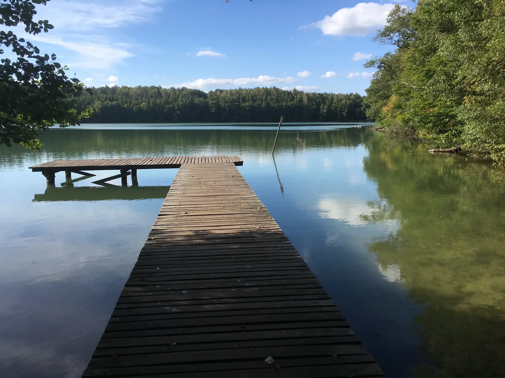
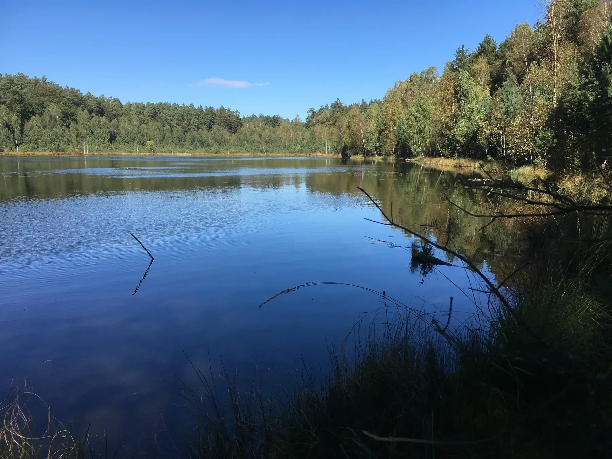
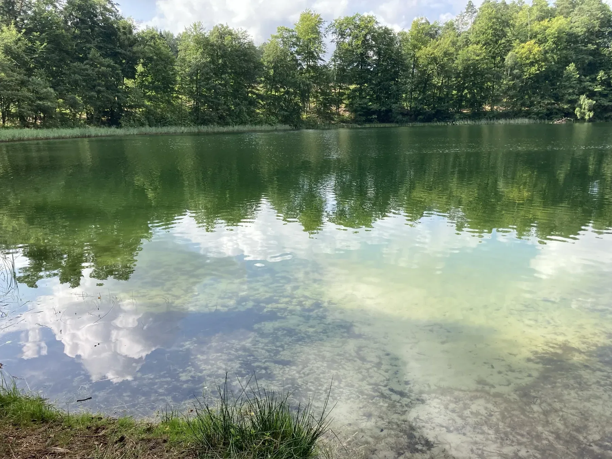
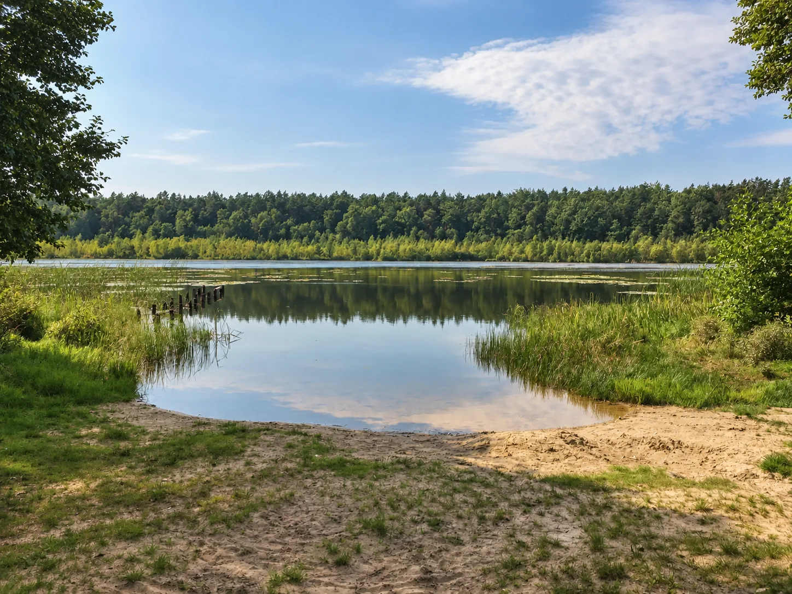
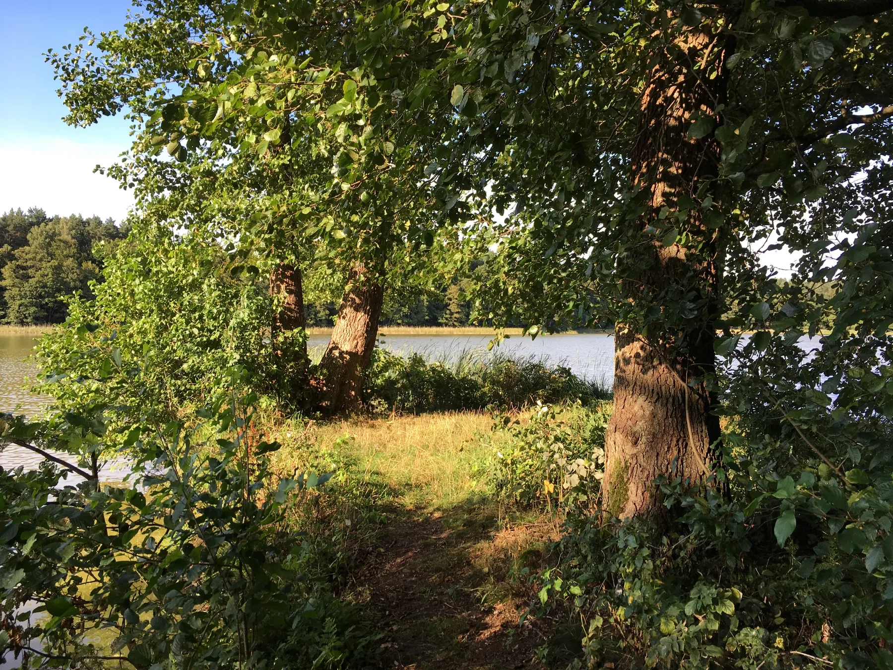

Na tej stronie
Nasze zdjęcia
Miejsca, które odkrywa się
po drodze.
Leśne jeziora nie tworzą listy do odhaczenia. Każde ma inny charakter - od przejrzystego Jasnego po niewielkie akweny schowane głęboko między drzewami.

Najczystsze w Polsce?
Jezioro Jasne
Jezioro Jasne jest często przedstawiane jako najczystsze jezioro w Polsce. Oficjalne materiały Parku potwierdzają jego niezwykłą przejrzystość - światło dociera tu aż na 14-15 m. To jeden z najbardziej niezwykłych akwenów całego Pojezierza Iławskiego.
Czytaj więcej ↓
Ok. 2 km szlakiem od Siemian
Urowiec
Całkowicie otoczone lasem. Według materiałów Parku to najgłębsze jezioro na jego terenie - 31,8 m. Bardzo dobry cel krótkiej wycieczki z Siemian.

Cicho
Jezioro Czarne
Leży po drodze do Jeziora Jasnego, więc łatwo połączyć oba miejsca podczas jednego leśnego wyjścia. Mniejsze, intymne i bez turystycznej infrastruktury w kadrze.

W lesie
Kociołek
Zielonkawe, spokojne i otoczone drzewami. Na naszych zdjęciach szczególnie dobrze widać przejrzystą wodę przy brzegu.

Mały akwen
Merynos
Małe leśne jezioro, które szybko się nagrzewa i w ciepłe dni bywa przyjemnym miejscem do kąpieli. Trzeba tylko pamiętać, że to akwen leśny - roślinność przybrzeżna i wodna jest bujna.

Natura + historia
Januszewskie
Jezioro można połączyć z wyprawą do ruin dawnego pałacu w Januszewie - miejsca o zaskakująco bogatej historii.
Pałac w Januszewie →Jezioro Jasne
Najczystsze jezioro w Polsce? Zobacz je z brzegu.
Jasne jest często nazywane najczystszym jeziorem w Polsce. Nie jest to formalny ogólnopolski ranking, ale skala przejrzystości jest wyjątkowa: według Zespołu Parków Krajobrazowych światło dociera tu na 14-15 m w głąb wody. Jezioro jest skrajnie oligotroficzne, ma kwaśną wodę o pH około 4,3 i prawie 20 m głębokości.
To miejsce ma też zaskakującą historię użytkową. Przed II wojną światową wodę z Jeziora Jasnego wykorzystywano do produkcji piwa. Zespół Parków Krajobrazowych zachował miejscową tradycję mówiącą o iławskich browarach.
Jezioro leży w rezerwacie. Kąpiel i ingerowanie w strefę brzegową są niedozwolone - najlepiej potraktować Jasne jako wyjątkowy cel spaceru i miejsce do obserwacji.
Trochę dalej
Witoszewskie i Burgale.
Dwa jeziora na spokojniejszy dzień.
Oba mają plaże i miejsca do zaparkowania, oba są dobrze znane wędkarzom. Witoszewskie naturalnie łączy się z wycieczką do Jerzwałdu, a Burgale - z wypadem do Susza.

Plaża + Jerzwałd
Jezioro Witoszewskie
To jezioro warto potraktować nie jako punkt do odhaczenia, ale jako przystanek na dłużej. Od strony Witoszewa jest zagospodarowana plaża i kąpielisko oraz wyznaczone miejsca postojowe. Dojazd prowadzi lokalnymi i gruntowymi drogami, a nad wodą jest dużo spokojniej niż przy bardziej oczywistych plażach Jezioraka.
Dobry plan: połącz Witoszewskie z Jerzwałdem. Plaża, las i później spacer po miejscach związanych ze Zbigniewem Nienackim składają się w sensowną półdniową wycieczkę.
Dla wędkarzy: źródła wędkarskie wymieniają tu m.in. leszcza, płoć, okonia, lina, szczupaka i węgorza; jezioro jest też klasyfikowane jako sandaczowe. Przed łowieniem warto sprawdzić aktualnego użytkownika wody i wymagane zezwolenie.
Gmina Zalewo - Witoszewo ↗ · Fishster - ryby i charakter jeziora ↗

Plaża + Susz
Jezioro Burgale
Burgale ma bardziej lokalny charakter. Przy plaży są miejsca parkingowe, przebieralnia, duża wiata ze stołami i ławami, miejsce na ognisko oraz podstawowa infrastruktura do spędzenia kilku godzin nad wodą. Dojazd prowadzi przez las, a nad samym jeziorem obowiązuje zakaz używania silników spalinowych.
Dobry plan: połącz Burgale z Suszem. Po kąpieli albo kilku godzinach nad wodą można pojechać nad Jezioro Suskie, przejść się promenadą albo zatrzymać się w mieście na jedzenie.
Dla wędkarzy: to naprawdę wędkarska woda. W zawodach PZW na Burgale łowiono szczupaki, okonie, liny, płocie, krąpie, ukleje, wzdręgi i leszcze. PZW zarybiało jezioro m.in. linem, szczupakiem i węgorzem, a opiekunem wody jest Koło PZW Susz.
Baza w Siemianach
Zostań blisko Jezioraka.
A stąd ruszaj, kiedy masz ochotę.
Ten przewodnik powstał wokół miejsca, w którym sami lubimy być. Nasz domek jest 200 m od Jezioraka i 100 m od lasu - dobry na dni bez planu i jako punkt startowy do odkrywania okolicy.